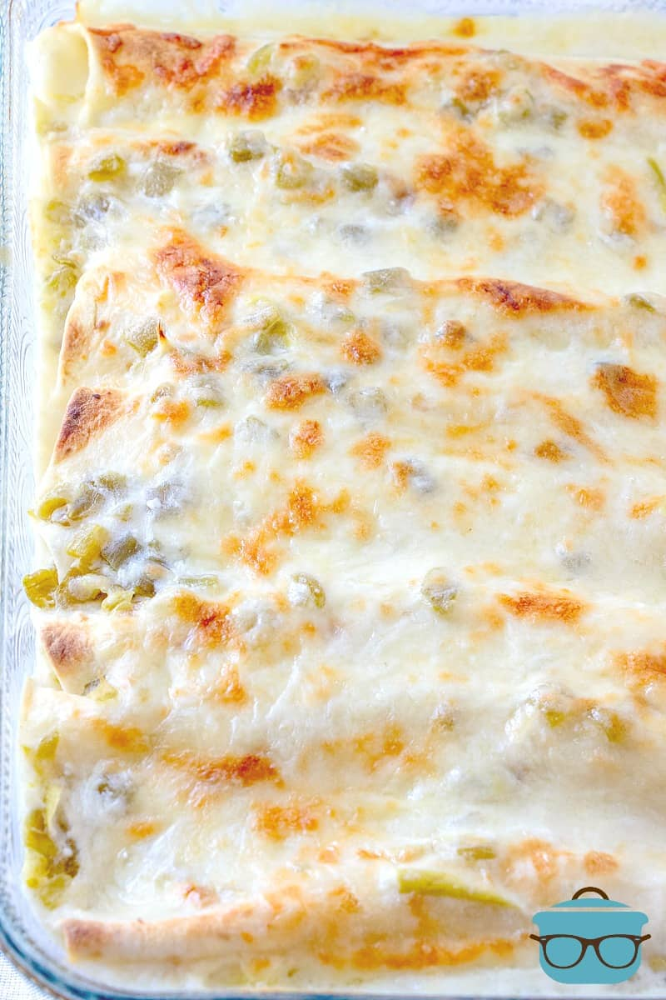

White Chicken Enchiladas

Description
This recipe for Creamy White Chicken Enchiladas is made with flour tortillas, shredded chicken, cheese, green chiles and a delicious creamy white sauce!
It’s not spicy and has a wonderful creamy sauce that really pulls it all together. It’s the perfect weeknight meal that can be pulled together pretty quickly! (The Country Cook)
Ingredients
- 2 cups shredded, cooked chicken (can use a store-bought rotisserie chicken)
- 1 cup shredded Monterey Jack cheese (or mozzarella)
- salt, pepper, Adobo seasoning, to taste
- 10 flour tortillas (taco size)
- 3 tbsp butter
- 3 tbsp all-purpose flour
- 2 cups chicken broth
- 1 cup sour cream
- 4 oz can diced green chiles (do not drain)
- 1 cup shredded Monterey Jack Cheese
Steps
- Preheat oven to 350F degrees. Spray 9×13-inch baking dish with nonstick cooking spray.
- In a medium-sized bowl, mix together 2 cups shredded, cooked chicken with 1 cup shredded Monterey Jack cheese along with salt, pepper, Adobo seasoning, to taste.
- Place chicken mixture into each of the 10 flour tortillas.
- Roll them all up and place them in the prepared baking dish.
- In a medium sauce pan, melt 3 Tablespoons butter. Whisk in 3 Tablespoons all-purpose flour and let cook and thicken for 1 minute (don't let it burn).
- Add 2 cups chicken broth and whisk until smooth.
- Stir in 1 cup sour cream and 4 ounce can diced green chiles. Be sure not to let the mixture boil.
- Take sauce off the heat and pour it over the enchiladas.
- Top with 1 cup shredded Monterey Jack Cheese.
- Bake for about 20-25 minutes. If you'd like, you can turn the broiler on high and broil these for a minute or two until cheese is slighly browned and bubbly.